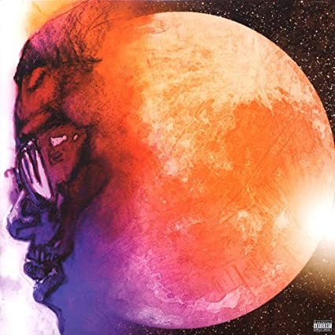

Albums

Man on the Moon

Man on the Moon II
Indicud
Scott Mescudi, better known as Kid Cudi, is an American rapper, singer, songwriter, producer, actor, and record executive. Cudi's debut single was "Day 'n' Night" and this song is what kick-started his career.
Man on the Moon
Man on the Moon II
Indicud
"I'll be up-up and away, up-up and away cause they gone judge me anyway, so whatever."
This is my favorite lyric because it is quite inspirational. What Kid Cudi means is that you might as well do whatever you want, people will judge, and you only have one life to live it up.
Kid Cudi has very powerful messages within his songs. He wants people to realize that success does not determine your worth and that you cannot let others judgement affect what you do. He also talks about a lot of hardships in his life which makes him a much more relatable artist comparatively to others.